Open Source
Conference Albania
Conference Albania

OSCAL is the first annual international conference in Albania organized to promote software freedom, open source software, free culture and open knowledge.
After the first edition, get ready for more ‘OS’ in ‘CAL’ at the second edition.
OSCAL is organized by Open Labs Albania, the local community and hackerspace devoted to FLOSS and Open Culture
Say hello: info@openlabs.cc